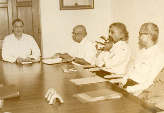
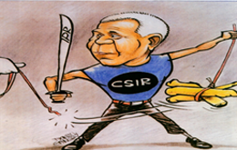
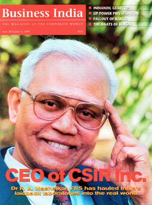

Career
Eminent scientist Dr. Raghunath Anant Mashelkar is one of twelve Indian National Research Professors at National Chemical Laboratory(NCL) and the President of Global Research Alliance. Dr. Mashelkar served as the Director General of Council of Scientific and Industrial Research (CSIR) - a network of thirty-eight laboratories with about 20,000 employees - for over eleven years. Prior to this, he was the Director of the NCL for six years. A chemical engineer from UDCT (Now Institute of Chemical Technology), Mumbai, he was also the President of Indian National Science Academy and the President of Institution of Chemical Engineers, UK. Throughout his stellar career, Dr. Mashelkar has made indelible contributions to India, inspiring millions in the process.
Dr. Mashelkar has played a critical role in shaping India's science and technology policies. He was a member of the Scientific Advisory Council to the Prime Minister and also of the Scientific Advisory Committee to the Cabinet set up by successive governments. He has chaired twelve high powered committees to look into issues as diverse as overhauling the Indian drug regulatory system, reviewing the state of Regional Engineering Colleges and preparing a National Auto Fuels Policy. As an expert in restructuring public R&D institutions, he has made contributions across the world – from South Africa to Croatia. When Dr. Mashelkar took over as the Director General of CSIR, he enunciated 'CSIR 2001: Vision & Strategy'. This was a bold – and the first ever – attempt to draw out a corporate - like R&D and business plan for a publicly funded R&D institution. This initiative transformed CSIR into a user focused, performance driven and accountable organization. This process of transformation has been hailed as one of the ten most significant achievements of Indian Science and Technology in the twentieth century.
It was through his sustained and visionary campaign that awareness of Intellectual Property Rights (IPR) has grown amongst Indian academics, researchers and corporates. He spearheaded the successful challenge to a US patent on the use of turmeric for wound healing,as well as another patent on Basmati rice. These landmark cases have set up new paradigms in the protection of India's traditional knowledge base, besides leading to the setting up of India's first Traditional Knowledge Digital Library. In turn, at an international level, this has led to the initiation of the change of the International Patent Classification System to give traditional knowledge its rightful place. As Chairman of the Standing Committee on Information Technology of the World Intellectual Property Organization (WIPO); as a member of the International Intellectual Property Rights Commission of UK; and as Vice Chairman on Commission in Intellectual Property Rights, Innovation and Public Health (CIPIH) set up by World Health Organization (WHO); he brought the perspective of developing nations into IP right discussions.
Still deeply connected with the innovation movement in India, Dr. Mashelkar is currently the Chairman of India’s National Innovation Foundation, Reliance Innovation Council, Marico Innovation Foundation and Thermax Innovation Council. He pioneered and spread the message of 'Gandhian Engineering', 'More from Less for More people' and ‘Affordable Excellence’. He has been tirelessly propagating a culture of innovation and balanced intellectual property rights regime in India for over a decade.
The President of India honoured Dr. Mashelkar with Padma Vibhushan (2014), Padmabhushan (2000) and Padmashri (1991), three of the highest civilian honours, in recognition of his contribution to nation building.
In fact, he has received accolades from across the world. Dr. Mashelkar is only the third Indian engineer to have been elected (1998) as Fellow of Royal Society (FRS), UK in the twentieth century. He is the first Indian to be elected (2017) as a fellow of National Academy of Inventors (NAI), US. In addition, he was elected Foreign Associate of National Academy of Science (USA) in 2005; Associate Foreign Member, American Academy of Arts & Sciences (2011); Foreign Fellow of US National Academy of Engineering (2003); Fellow of Royal Academy of Engineering, UK (1996); Foreign Fellow of Australian Technological Science and Engineering Academy (2008); and Fellow of World Academy of Art & Science, USA (2000).
In August 1997, Business India named Dr. Mashelkar among the 50 path-breakers in post - independent India. In 1998, Dr. Mashelkar became the first scientist to win the JRD Tata Corporate Leadership Award. On 16 November 2005, he received the Business Week (USA) award of ‘Stars of Asia’ at the hands of George Bush (Sr.), the former President of USA. He was the first Asian Scientist to receive it. Thirty seven universities have honoured him with honorary doctorates, which includes Universities of London, Salford, Pretoria, Wisconsin and Delhi.
Dr. Mashelkar has won over 50 awards and medals, which include S.S. Bhatnagar Prize (1982); Pandit Jawaharlal Nehru Technology Award (1991); G.D. Birla Scientific Research Award (1993); Material Scientist of Year Award (2000); IMC Juran Quality Medal (2002); HRD Excellence Award (2002); Lal Bahadur Shastri National Award for Excellence in Public Administration and Management Sciences (2002); World Federation of Engineering Organizations (WFEO) Medal of Engineering Excellence, Paris (2003); Lifetime Achievement Award by Indian Science Congress (2004); the Science Medal by the Academy of Science for the Developing World (2005); Ashutosh Mookherjee Memorial Award by Indian Science Congress (2005); many more.
Dr. Mashelkar is on the Board of Directors of several reputed companies such as Reliance Industries Ltd., Tata Motors Ltd., Hindustan Unilever Ltd., GeneMedix Life Sciences Ltd., Indigene Pharmaceuticals Ltd., ICICI Knowledge Park, Thermax Ltd., Piramal Life Sciences Ltd., and KPIT Cummins Infosystems Ltd. He is a member of the Scientific Advisory Board of Microsoft. Through various formal initiatives and informal efforts, Dr. Mashelkar continues to champion the cause of developing nations and underprivileged people everywhere.
Dr. R A Mashelkar Curriculum Vitae View/Download Curriculum Vitae